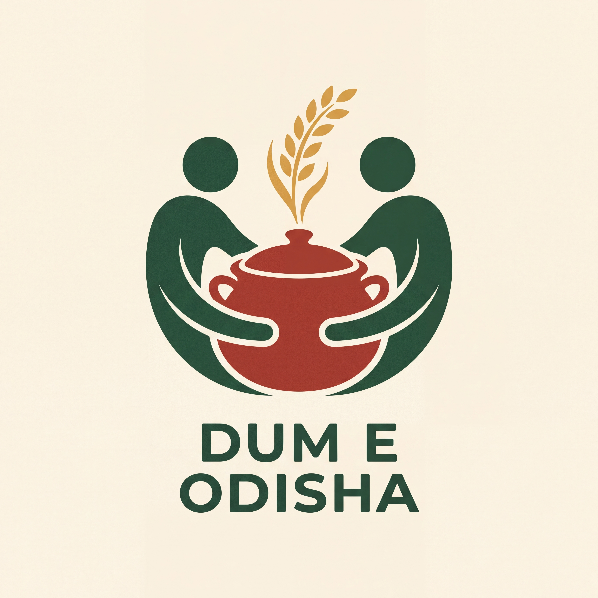
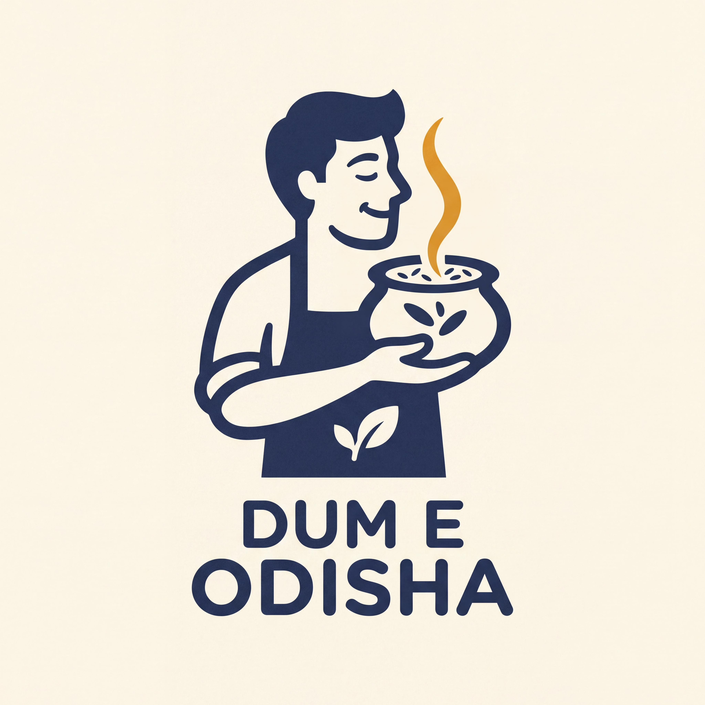

Concept 01
The Shared Handi
Odisha community · contemporary folk-inspired
Two people cradle one handi. Their curved arms embrace the vessel; rising rice turns the shared meal into the centre of the symbol.
Explore this brand guide →Three different ways to make flavour, sharing and the cook visible in the logo.
The illustration now leads. Each route has its own meaning, palette, graphic language and packaging application, with DUM and E kept distinct in the full name.

Odisha community · contemporary folk-inspired
Two people cradle one handi. Their curved arms embrace the vessel; rising rice turns the shared meal into the centre of the symbol.
Explore this brand guide →Mughal botanical-inspired · aroma & abundance
A handi grows into a balanced flowering garden. The pot identifies cooking; the rising grains and botanical rhythm suggest layers of aroma.
Explore this brand guide →
Modern illustrative mascot · care & aroma
A cook holds a handi close, with the face and aroma shaped through negative space. The gesture communicates care and anticipation of the meal.
Explore this brand guide →The Shared Handi is the strongest fit for an Odisha-rooted, welcoming brand: the human gesture and cooking vessel give the symbol a direct meaning, and the story has room to grow across bags, menus and walls.
The Dum Garden offers the richest botanical illustration world. The Dum Keeper is the most direct character-led route. These are alternative identities, rather than colours to mix together.
All three retain the name Dum E Odisha and tagline Flavour in Every Layer.
Kruti Coffee suggests a useful principle: connect the brand’s visual story to a real origin and repeat it across the experience. For Dum E Odisha, the proposed subjects are sharing, cooking and aroma.
The Odisha route is contemporary folk-inspired illustration. The garden route draws on Mughal botanical painting. These are distinct references, with their context explained inside each guide.
Read the research and reference interpretation →
Download all three concept setsAll new logo artwork and mockups created only with Nano Banana. Concepts are high-resolution raster studies; production masters follow after selection.